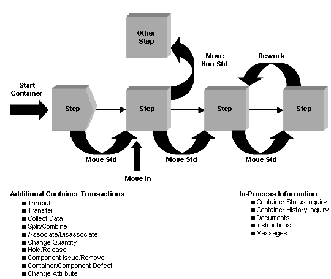

执行“Manufacturing 车间”事务以记录车间的容器和资源活动。每个事务执行一项独特功能并记录 Manufacturing 数据库中的特定信息。然后这些信息可用于状态跟踪及执行分析。使用应用程序或自定义客户端应用程序来执行事务。
此图表显示了一些用于车间的常见事务。

执行“Manufacturing 车间”事务以记录车间的容器和资源活动。每个事务执行一项独特功能并记录 Manufacturing 数据库中的特定信息。然后这些信息可用于状态跟踪及执行分析。使用应用程序或自定义客户端应用程序来执行事务。
此图表显示了一些用于车间的常见事务。

© Siemens 2025